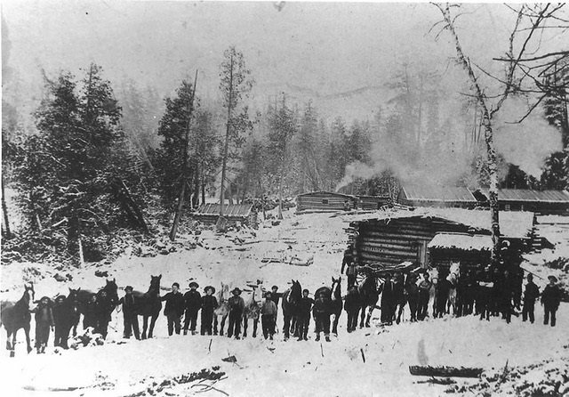
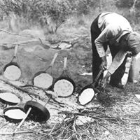

Dumoine Tote Road History
A River with a storied past
The Dumoine has been a trade route linking first nations people from the north and east with others coming from the south and west for centuries. The Ottawa River was the main trade route where they met sometimes at the mouth of the Dumoine other times at traditional meeting places further up or down the mighty Kichi Sipi. The Ottawa River watershed is the traditional home of the Algonquin Nation and the Dumoine was the traditional home of the Dumoine River Band of that nation. This band, a group of 12 families, created the first portages and hunting trails in the watershed.
A timeline of the Dumoine's natural and human history
10,000 years ago
The mouth of the river was submerged beneath the northern limit of the Champlain Sea.
5000 to 8000 years ago
Ancestors of the Anishnabe lived at Morrison Island thirty kilometres from the mouth of the Dumoine and traded with nomadic tribes travelling by foot or canoe up and down the river.
1000-2000 years ago
A band of Algonquin families claimed or were assigned by communal law the Dumoine River as their bands territory. As a band they identified each families hunting territory of 500-1000 square miles , limits defined by significant natural features.
1000-500 years ago
Summer travel by the band to harvest natural events like berries,waterfoul,birchbark and fish especially eels, to trade and to socialize and meet as a tribe during the open water season , involved long stopovers at the gateway to their territory, the mouth of the Dumoine. Travel by birchbark canoe by the band involved both upriver and downriver travel on the Dumoine and Ottawa Rivers.
1500-1600 AD
Contact with Europeans was first made in the Gulf of St Lawrence (Cartier and Basque fishermen) in the 1500s. Word and trade goods would have reached the powerful Morrison Island band known as The Kitchissippirini . Their Chief ‘Tessouat’ with other chiefs met Champlain at the Gulf in 1603.
1600-1700
Early French Traders recognized the trade potential at the Dumoine mouth on their way to establish a fort on Lac Temiscamingue. Trade and travel was severely interrupted by the Beaver Wars involving the Haudennaussonee (five nation Iroquois) and the Anishnabe and Wyandot/Wendat (Huron) people.
1600-1700
The original post on Lac Temiscamingue was destroyed by Seneca Warriors during this period as was the village on Morrison Island. Lac Temiscamingue was a short upriver trip for the Dumoine Band families via Lac Dumoine and the Kipawa River. A parade of European explorers, soldiers and priests joined the traders passing by and sometimes stopping at the Dumoine in the 1600s.
1700-1800
After the great Peace Treaty is signed in Montreal ended the Beaver wars, French Merchant Paul Guillet purchased the trade licence for the Ottawa River watershed. He built a new Fort Temiscamingue at the narrows where it still exists today and temporary posts at Grande Lac Victoria, Lac Dumoine and the mouth of the Dumoine. Trade goods were carried to Temiscamingue in the new 36` Canot du Maître and to the outposts in the smaller 26` North Canoe. The Dumoine Band would have seen, traded, built and even crewed a lot of these canoes.
1700-1800
Two more French explorers and one Odawa warrior marked the end of the French Era. Antoine de Lamothe Cadillac 1701 (to establish a Fort (Fort Pontchartrain in the "Détroit" (détroit = narrows), Pierre Gaultier de La Verendrye & Sons (opening up trade into the Rocky Mountains watershed), Odawa Chief Obwandyag (Pontiac 1763 recruiting for his rebellion against the British at Detroit).
1721
A Catholic Mission is established at Oka/Lake of Two Rivers. The work of a century of Jesuits, Recollect/Récollet and Sulpician priests travelling the Ottawa /Georgian Bay route to convert First Nations to Catholicism bears fruit as believers including some Dumoine Band families travel the Ottawa to the mission each summer to be married or baptized.
1759
Alexander Henry the Elder, the first British trader after the fall of New France to the British stops to trade at the mouth with what appears to be a group of Swampy Crees, (Maskegons - Mushkegowuk people) from the James Bay watershed. This shows the N-S trade link the Dumoine served.
1760-1794
An English merchant from Albany NY, William Grant, and a Scottish Trader, Richard Dobie, take over Fort Temiscamingue and its outposts and compete with the Hudson Bay Company forts along the height of land leading to James Bay. Algonquin Trade along the Ottawa tributaries is their prosperous territory.For thirty years they competed for the furs of the other tribes west and north.
1769
The independent Montreal traders merge to form the Northwest Company to compete with the Hudson Bay Company in the west.
1794
Grant and Dobie were not invited to join NWCo until 1794 after thousands of brigades of NW Co had passed the Dumoine on the way to Ft William at the head of Lake Superior.
1821
The Hudson Bay Company lead by Sir George Simpson merges with the Northwest Co. Simpson and HBCo move headquarters to Montreal. He personally would have his express canoe paddled by the mouth of the Dumoine several times on his way west. Relatives of Grant and Dobie would continue to be HBCo employees at Fort Temiscamingue.
1821
HBCo would maintain posts at Ft William on the Ottawa, Rapides des Joachims, a temporary spring post at the mouth of the Dumoine and a post at Mattawa Fort Temiscamingue and Grande Lac Victoria. Dumoine Band traders visited each of these posts travelling up and down the Dumoine.
1840
Roderick Ryan and son Roger begin cutting timber at the mouth of the Dumoine and build a two miles road to the top of their limit.
1840-1845
Surveyors JJ Rooney (winter of 1840) surveys the Dumoine for timber limits with guide Cecil Fils de Grand and Pon`is, 1845 William Logan and McNaughton survey Ottawa River as first survey for Dept. of Geological Surveys. He notes Ryans road and timber operation.
1846
Thomas Keefer Engineer for the Department of Public Works builds a proper Timber Crib Slide at the Rapids des Joachims (replacing a poorly constructed private effort in 1844). This greatly assists the movement of timber cut above by not requiring the timber cribs to be disassembled above and then reassembled below this rapid. A similar slide or canal now existed at every rapid to Quebec City.
1850
The Dumoine Boom and Slide Company, owned by the logging companies operating on the Dumoine build river improvements including a boom at the mouth, several deflector side dams’ 300` slide past the first drop at Grande Chute and a 25 km road from the mouth to Grande Chute.
1854
Department of Public Works sells mill rights on Chaudière Island. Within 5 years this revolutionized logging on the Dumoine by changing the type of logs required at the mills from giant squared timber to round 16` saw logs. This shortens the river drive for saw logs by three weeks. Square timber would still go to Quebec City until 1900. Logging expands to the top of Lac Dumoine.
1854
The steamer The Pontiac was built and launched in Pembroke to serve the Ottawa from Pembroke to Rapides des Joachims. This links Rapides des Joachims with Aylmer and Montreal with a series of Steamers canals and stagecoaches bypassing each rapid.
1860
Duncan Sinclair surveys Aberdeen and Aberford Townships to allow the sale of 100 acre lots to settlers. This includes the area around the lower Fildegrande and Grande Chute.
1866
The timber companies that used the Ottawa River to float their timber to the Ottawa Mills formed the Upper Ottawa Improvement Company (ICO) to move everyone’s timber to market equitably (previously a very competitive and negative procedure). Timber companies were still responsible to move their timber to the boom at the mouth of the river.
1871
The first census of the new Confederation of Canada takes place.
1877-1880
The Steamer The Kippawa is launched to link the upper landing at Rapides des Joachims to the south end of the Rocher Capitaine Portage Road. Wagons and steamers extended further up the Ottawa to Mattawa by 1880. The Pembroke Mattawa Colony Road has been functioning year-round for a decade and the railroad just arrived in Pembroke
Historical Sites
Mouth of Dumoine Stopping Place
1861 CensusPaul Dufoe was the middle son of Joseph Dufoe and Mary Simpson-Dufoe, and one of twelve children.
Joseph Dufond / Dufoe / Dufault, was born in 1823, son of Nicolas Dufond and mother was Agatha Jawbone [sometimes written Jeanveau]
(descendants of Antoine Nijkiwiwisens) Joseph had married Mary Simpson in Chapeau in 1852. She was the daughter of
Jeanette Robinson & Alexander Simpson [a Scottish man who abandoned them and went back to Scotland] Mary Simpson was born in
Red River District in 1839.She identified herself as Scottish decent and Joseph identified as French. Mary`s mother however,
Jean Portelance born in 1805 in Red River, identifies as First Nation.

Mary and Joseph, their four oldest children John (1855) Joseph (1857),
Mary (1858) William (1859) and Jean Portelance/Mary Simpson were all registered in the 1861 census as living in a log home in Rapides des Joachims.
Their neighbours at the time included Benjamin Sweezy`s family, Frederick Ferris family, and the Holt-Colton family that ran the best hotel in town.
Staying in that hotel and recorded in the 1861 census was Duncan Sinclair the man in charge of the surveying of Aberdeen and Aberford Townships which included
the mouth of the Dumoine and upriver to Grande Chute.
Since 1858, the townships on the Upper Canada side of Rapides des Joachims were being surveyed for settlement as well as a new road to link Pembroke to Mattawa.
The steamer Pontiac from Pembroke was arriving daily and the Rapides des Joachims and the local timber slide and tote road was very busy. It must have felt like
the area was going through a boom to friends Benjamin Sweezy and Joseph Dufoe (spelt Dufort in 1861 census). Benjamin was the first to move.

This is the first census of the new Confederation of Canada. On the Dumoine River several Algonquin and European settlers are enumerated (the one and only time Dumoine is enumerated separately from Aberdeen Township) including Benjamin Sweezy and his ...family who are running a farm, stopping place and shoemakers shop at the mouth. Many a Dumoine logger must have bought or repaired his Clog Boots at Sweezy`s Shop while staying overnight. I believe Sweezy would have started this operation by salvaging the remains of the groundwork done by Ryan, HBCo and all those that used the site previously. Sweezy was the ICO agent for the Dumoine Boom at the mouth. Given the advanced development of his farm, shop and services by 1871, I believe he started his operation circa 1867. In 1871 Joseph and Mary Dufoe are still living in Rapides des Joachims, which has more than doubled in population. Mary and Joseph added Oliver (1861), Paul (1864), Benjamin (1866) Cecelia (1867) and Sophia (1868) it the population. A 61 year Scottish widow named Jane Robinson (born 1810) is living with them. This is Jean Portelance Joseph in all other censuses identifies himself as a laborer but in 1871 he calls himself a stonemason suggesting he specialized in foundations, chimneys, piers etc. By 1875 Benjamin Sweezy had developed business interests further upriver at Rocher Capitaine. His father Aaron and three other teenage relatives from New Brunswick, likely nephews of Benjamins, were running a tavern in Rapides des Joachims likely financed by Benjamin. It’s not known when exactly he sold or leased the Dumoine Mouth Stopping Place to Joseph Dufoe but there is a clue in the next census.
How big was the Sweezy/Dufoe Farm?The 1871 (the only census that recorded this) Sweezy owned 400 acres, 300 were occupied, 50 improved and 1 was a garden. They produced annually 100 bushels of barley, 20 of peas, 200 of potatoes, 23 tons of hay and 300 cord of wood with butter and fish also sold. Aside from his living quarters and livestock stables Sweezy had established a shoemakers shop employing 2 people and it was making a reasonable income. When combined with overnight accommodations meals and stable fees for travellers, boom agent and other contracts the operation was profitable The Sweezy`s then an expanded workforce of Dufoes (minus the shoemaker) could make a reasonable living at the Dumoine Mouth Stopping Place.  In 1875 Sweezy applied unsuccessfully to have a post office at his place. The postmaster refused siting the facts that Rockcliffe post office was less than two miles away and in the winter mail was sent directly to the lumber camps by sleigh or dog team courier. So the date the Dufoes took over Dumoine River Mouth was between 1876 and 1880. By 1878 a steamboat The Kippawa ran daily trips from Taits Landing at the top of Rapides des Joachims to Rocher Capitaine portage with stops along the way anywhere a signal flag flew indicating freight, mail or passengers to board. The Dufoes Stopping place featured a dock built by ICO for the boom operations and would have been a frequent stop. In the winter an ice road for sleighs was marked along the Quebec shore to Swisha and another less safe one crossed to Rockcliffe.
1881 CensusJoseph and Mary and their eleven children are recorded as living in four shanties. They have added Maggie (1874) and Mariah (1879) to the family (the daughter Mary died young, circa 1864). Sons Joseph, John, Oliver, Paul, William and Benjamin are all between 15-26 and are registered as labourers. This is an impressive workforce and a clue that Joseph has bought the Sweezy operation and his family is running it as a diversified farm, stopping place, lumber service operation.
1891 CensusThis is a turning point in the Dufoe Stopping place. Paul is registered as head of the family and recorded as a Hotel/Innkeeper, suggesting she ran the operation. Living there was his wife, an Irish bride named Amistisie, three years younger than Paul, his father (57), mother (53), brother Benjamin (23), sisters Maggie (16) and Maria (10)…and 95 year old Jane Robinson/Portelance/Simpson.
Oliver has become a shantyman and the other brothers and sisters... have moved back to Swisha. Cecelia`s husband Joseph Bertrand is registered as a shantyman. The other brothers are recorded as labourers which could have been any work on the rivers, in the village or likely taking multiple steamboat rides to assist Paul during planting and harvest season and summer visits to the grandparents. They each had 4-5 children, a large workforce.
Paul and Amistisie never have children. Joseph Sr. dies around 1897 and is buried across the Ottawa River at Stonecliffe. Mary moves to Swisha and dies there a few years later.She is buried in the St Anne Cemetery in Rapides des Joachims.
 The railroad had arrived at Moor Station and Rockcliffe in 1890.This marked the beginning of the arrival of Big City Sportsmen from New England and Montreal who were going to private hunting and fishing leases up the Dumoine, Bear Creek, Fildegrande and throughout the Pontiac. Some of those “Sports” would take the ferry across the Ottawa from Rockcliffe [Stonecliffe] ferry over and maybe stay at Dufoes or walk to their camps up the tote road.
Paul and Amistisie I believe did quite well at the Dumoine Mouth Stopping place and expanded their operations.
Sometime around 1895-1900 Paul Dufoe bought the Hawkesbury Farm Depot now known as the Dumoine Rod and Gun Club Lodge. The lumber operations had moved north of Lac Dumoine by then. The busiest Dumoine tote road began at Swisha and went north to Rettys/Bouchers Stopping place then east to the Noire and west to the Dumoine. The split was at km 22 on todays road near Triple R outfitters, and a chain of Stopping Places extended every ten miles from Swisha to Lac Dumoine Depot. The Hawkesbury lumber company was selling off its limits and farms and the Dumoine location must have been cheap.
But I guess it was just a little too far away for Paul to operate and he sold it to Swisha residents Odeal and Adelard Sauve circa 1900.
The railroad had arrived at Moor Station and Rockcliffe in 1890.This marked the beginning of the arrival of Big City Sportsmen from New England and Montreal who were going to private hunting and fishing leases up the Dumoine, Bear Creek, Fildegrande and throughout the Pontiac. Some of those “Sports” would take the ferry across the Ottawa from Rockcliffe [Stonecliffe] ferry over and maybe stay at Dufoes or walk to their camps up the tote road.
Paul and Amistisie I believe did quite well at the Dumoine Mouth Stopping place and expanded their operations.
Sometime around 1895-1900 Paul Dufoe bought the Hawkesbury Farm Depot now known as the Dumoine Rod and Gun Club Lodge. The lumber operations had moved north of Lac Dumoine by then. The busiest Dumoine tote road began at Swisha and went north to Rettys/Bouchers Stopping place then east to the Noire and west to the Dumoine. The split was at km 22 on todays road near Triple R outfitters, and a chain of Stopping Places extended every ten miles from Swisha to Lac Dumoine Depot. The Hawkesbury lumber company was selling off its limits and farms and the Dumoine location must have been cheap.
But I guess it was just a little too far away for Paul to operate and he sold it to Swisha residents Odeal and Adelard Sauve circa 1900.

Bertands Stopping Place
Paul invested in a second stopping place at the mouth of the Fildegrande with his sister Cecilia and her husband Joseph Bertrand. Joseph, previously a shantyman, knew the site and the needs of the shantymen ,river drivers and teamsters that were his customers. Joseph Bertrand and Mary (Cecilia) are identified as Innkeepers in this census. They have five children Pearl (1890), John (1892) Gladys (1894) William (1897) Gertrude (1899). Joseph Bertrand identifies his father as being from France and mother from the USA. I believe based on what evidence remains at the mouth of the Fildegrande site on the new Dumoine tote road trail, this stopping place was a big one with a large bunk house and stable and operated into the 1940s. But a rowdy teamster stopping place on a wilderness road was probably no place to raise a family. Cecelia and her family moved back to Swisha before 1911 for school and a social life. Joseph Bertrand may have worked at the stopping place seasonally or he and Paul figured out how to run it with employees. It would have been connected to the big WEC EDWARDS camp on Six Mile lake,Paul Dufoes, the local fire towers and Rapides des Joachims ORFPAL office by telephone lines from 1914-1950.
1911 CensusPaul and Amistisie are still registered as farmers in Aberdeen Township but at 74 and 71 they must have retired. They have no relatives but four labourers registered below their name are identified as Lumber Depot or River Boom labourers so they could have been staying and working the Dufoe Stopping place. Benjamin Dufoe is recorded as a River Boom man, which means he could have moved the Dumoine Boom from the family farm at the mouth to Pembroke or Boom Creek below Swisha. The First World War was starting and attracting young men into the service. In 1902 a metal bridge across two islands in the middle of the Rapides des Joachims linking the road from the Moore Station to Swisha replaced an unreliable old wooden one at the foot of the rapids. In 1914 the lumber companies and the Government of Quebec funded a limited company that was to look after the protection of the most valuable timber. ORFPAL, The Ottawa Forest Protection Association Limited went to work establishing a major headquarters in Rapides des Joachims and a new neighbour for Paul Dufoe. The Dumoine River was divided into a north and south sector. Eight fire towers were built in the watershed along with eight rangers cabins and four equipment Depots. The head ranger`s station was built above the high water mark and Paul Dufoes 400 acre farm. The foundation still exists today. The company and its rangers kept all the toe roads and portages open to access fighting a fire as soon as it was spotted from the firepower. Steel telephone lines strung through white insulators attached to tree trunks connected all the towers cabins depots lumber camps and fishing camps in the watershed. Anyone could be conscripted to fight a large fire. Hector Meilleur was the head ranger stationed at the cabin at the mouth in 1945. It was also the end of a mile portage down the tote road around Poplar Rapids which existed before the dam.

Potvin Stopping Place
In 1918 the founding members of the Dumoine Club Lease hiked in from Dufoes up the tote road to survey a large territory and apply for a private club lease. It was granted for the area of about ten miles northeast and west of the Fildegrand River all the way to Grande Chute. They built their first lean-to cabin on Robinson Lake with 7 more cabins to follow on Robinson, Cullin, Green and Stevens. Until the 1940s they hiked into these cabins via the Dumoine Tote Road stopping at Dufoes, Bertrand`s and a third farm they called Main Camp (also known as Potvin`s Farm). By 1940, using their personal vehicles became more reasonable from Swisha.
The Potvin site 3 miles from Bertrands and 2 miles from the lumber camp on Robinson was a secondary stopping place for overflow. I'm sure the business from the Dumoine Club that adopted it as Main Camp or Headquarters from 1918-1930 kept Potvin Stopping place going.I believe ORFPAL kept the tote road and stopping places operating from about 1920 to 1960. In 1960 the log drives were stopped on the Dumoine and trucks were used to move the logs from the Dumoine to the Ottawa River. The last Ottawa River log drive was 1999. ORFPAL ceased local operations in 1968 when forest ranger patrols and firetowers were replaced by air patrols.
1921 CensusPaul Dufoe now 84 and Amistisie now 81 are still registered as farmers so the stopping place depot must have been a life to their liking. They must be retired there with labourers or families running the place. Brother Benjamin Dufoe dies in 1925, age 90. Joseph Bertrand dies in 1930, age 74, two years after his son William at age 25. They and many more pioneers of this area are buried in St Anne cemetery in Rapides des Joachims. Paul and Amistisie Dufoe are not buried there. Where is their final resting spot…underwater?

Recently
In the 1900s the forest was patrolled by forest rangers watching for fires from a series of fire towers throughout the Dumoine Valley. The Tote road became the access route for these rangers and their fire fighting equipment. Lastly, a new breed of urban sportsmen, keen on the Dumoine hunting and fishing experience, walked up the Dumoine Tote Road to their cabins beginning in 1918. By 1960 air patrols by float planes were used to locate fires. Improved trucks and bush roads all replaced the forest rangers, the river drives and offered an alternative for the walk-in sportsmen.
The Tote Road was then abandoned to nature...Until now.
Thank you for learning about the trail's stories, it's time for you to go and help write the Dumoine Tote Road's new chapter by hiking the trail!